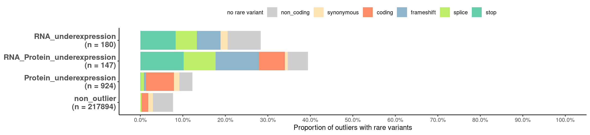

# Load plotting config and functions
source("src/config.R")
source("src/functions/Integration/integrate_annotate_omics.R")
source("src/functions/variant_enrichment.R")
# Read integrated omics file
# rp <- readRDS("/s/project/mitoMultiOmics/multiOMICs_integration/processed_data/integration/patient_omics_full.RDS") %>% as.data.table()
rp <- readRDS(snakemake@input$patient_omics) %>% as.data.table()
# Subset cases with WES and RNA-seq data avaliable
rp <- rp[WES_avaliable == T & RNA_seq_avaliable == T]
paste("Number of samples with WES export and RNA-seq avaliable:", uniqueN(rp$SAMPLE_ID))
## [1] "Number of samples with WES export and RNA-seq avaliable: 140"
#Keep only genes, with both RNA and protein measured
rp <- rp[ gene_detected == "RNA and protein detected"]
# Filter for the genes, detected as outliers at least once
outliers <- unique(rp[outlier_class != "non_outlier"]$geneID)
rp <- rp[geneID %in% outliers]
# Add up- down- outlier class
rp <- add_up_down_class(rp,
Padj_threshold = PADJ_THRESHOLD,
Zscore_threshold = ZSCORE_THRESHOLD,
l2FC_threshold = LOG2FC_THRESHOLD)
# Subset necessary columns
rp <- rp[ , c("SAMPLE_ID", "geneID", "outlier_class", "up_down_outlier") ]
rp <- rp[!duplicated(rp), ]
Outlier class
os1 <- rp[, .N, by = outlier_class]
os2 <- rp[, .N, by = up_down_outlier]
colnames(os2)[1] <-"outlier_class"
os <- rbind(os1, os2)
rm(os1, os2)
Number of outliers per class
DT::datatable(os, caption = "Outlier counts", escape = F)
#####################
# As soon as it is not allowed to share genetic data,
# only the result of the analysis could be shared.
# to reproduce the analysis please prepare the variant table (vt)
# with 3 columns: sample_Id, gene_Id and variant type: stop, coding, splice ...
# # Read variant annotation
# vt <- fread("/s/project/mitoMultiOmics/multiOMICs_integration/rare_variants.tsv")
# vt <- vt[ geneID %in% unique(rp$geneID), c("SAMPLE_ID", "geneID", "var_type")]
#
# rp <- merge(vt, rp, by = c("SAMPLE_ID", "geneID"), all.y = T )
# rp[is.na(var_type), var_type := "no rare variant"]
#
# ####################
# # READ enrichment
# enr <- fread("/s/project/mitoMultiOmics/multiOMICs_integration/enrichment_rare_vt.tsv")
# enr <- enr[, c("Cat", "outlier_class", "importance")]
# setnames(enr, c("Cat", "outlier_class", "importance"), c("var_type", "up_down_outlier", "importance"))
#
# pr <- merge(rp, enr, by = c("var_type", "up_down_outlier"), all.x=T)
# pr <- pr[order(importance), ]
# pr <- pr[!duplicated(pr[, c("up_down_outlier", "SAMPLE_ID", "geneID")]), ]
# pr$importance <-NULL
# pr <- pr[!duplicated(pr), ]
#
# ####################
#
#
# # Calculate proportions of outliers
# pr <- pr[, .N, by = .(up_down_outlier, var_type)]
# pr[, total := sum(N), by = .(up_down_outlier)]
# pr[, prop := N/sum(N), by = up_down_outlier]
# write_tsv(pr, "/s/project/mitoMultiOmics/multiOMICs_integration/raw_data/proportions_rare.tsv")
pr <- fread(snakemake@input$enrichments_proportions)
# pr <- fread("/s/project/mitoMultiOmics/multiOMICs_integration/raw_data/variant_type_enr_prop.tsv")
Underexpression outliers
pr[, var_type := factor(var_type, levels = c("no rare variant", "non_coding", "synonymous", "coding", "frameshift", "splice", "stop"))]
pr[, outlier_class_label := paste0(up_down_outlier ,'\n', "(n = ", total, ")") ]
ggplot(pr[up_down_outlier %in% c("RNA_underexpression", "Protein_underexpression", "RNA_Protein_underexpression", "non_outlier")], aes(outlier_class_label, prop)) +
geom_bar(stat= 'identity', aes(fill = var_type)) +
scale_fill_manual(values = variant_colors ) +
coord_flip(ylim = c(0,1)) +
scale_y_continuous(breaks=seq(0,1, 0.1), labels=scales::percent) +
labs( y = "Proportion of outliers with rare variants")+
theme_classic()+
theme(legend.position="top", axis.title.y = element_blank() ,legend.direction = "horizontal",
legend.title = element_blank(),
axis.text.y = element_text(face="bold", size=12)) +
guides(fill = guide_legend(nrow = 1))

IyctLS0KIycgdGl0bGU6IFByb3BvcnRpb24gb2Ygb3V0bGllcnMgd2l0aCByYXJlIHZhcmlhbnRzCiMnIGF1dGhvcjogc21pcm5vdmQKIycgd2I6CiMnICBpbnB1dDoKIycgIC0gcGF0aWVudF9vbWljczogJ2BzbSBjb25maWdbIlBST0NfREFUQSJdICsgIi9pbnRlZ3JhdGlvbi9wYXRpZW50X29taWNzX2Z1bGwuUkRTImAnCiMnICAtIGVucmljaG1lbnRzX3Byb3BvcnRpb25zOiAnYHNtIGNvbmZpZ1siUkFXX0RBVEEiXSArICIvdmFyaWFudF90eXBlX2Vucl9wcm9wLnRzdiJgJwojJyAgb3V0cHV0OgojJyBvdXRwdXQ6IAojJyAgIGh0bWxfZG9jdW1lbnQ6CiMnICAgIGNvZGVfZm9sZGluZzogaGlkZQojJyAgICBjb2RlX2Rvd25sb2FkOiBUUlVFCiMnLS0tCgojIExvYWQgcGxvdHRpbmcgY29uZmlnIGFuZCBmdW5jdGlvbnMKc291cmNlKCJzcmMvY29uZmlnLlIiKQpzb3VyY2UoInNyYy9mdW5jdGlvbnMvSW50ZWdyYXRpb24vaW50ZWdyYXRlX2Fubm90YXRlX29taWNzLlIiKQpzb3VyY2UoInNyYy9mdW5jdGlvbnMvdmFyaWFudF9lbnJpY2htZW50LlIiKQoKCiMgUmVhZCBpbnRlZ3JhdGVkIG9taWNzIGZpbGUgCiMgcnAgPC0gcmVhZFJEUygiL3MvcHJvamVjdC9taXRvTXVsdGlPbWljcy9tdWx0aU9NSUNzX2ludGVncmF0aW9uL3Byb2Nlc3NlZF9kYXRhL2ludGVncmF0aW9uL3BhdGllbnRfb21pY3NfZnVsbC5SRFMiKSAlPiUgYXMuZGF0YS50YWJsZSgpCnJwIDwtIHJlYWRSRFMoc25ha2VtYWtlQGlucHV0JHBhdGllbnRfb21pY3MpICU+JSBhcy5kYXRhLnRhYmxlKCkKCiMgU3Vic2V0IGNhc2VzIHdpdGggV0VTIGFuZCBSTkEtc2VxIGRhdGEgYXZhbGlhYmxlIApycCA8LSBycFtXRVNfYXZhbGlhYmxlID09IFQgJiBSTkFfc2VxX2F2YWxpYWJsZSA9PSBUXQpwYXN0ZSgiTnVtYmVyIG9mIHNhbXBsZXMgd2l0aCBXRVMgZXhwb3J0IGFuZCBSTkEtc2VxIGF2YWxpYWJsZToiLCB1bmlxdWVOKHJwJFNBTVBMRV9JRCkpCgoKI0tlZXAgb25seSBnZW5lcywgd2l0aCBib3RoIFJOQSBhbmQgcHJvdGVpbiBtZWFzdXJlZCAKcnAgPC0gcnBbIGdlbmVfZGV0ZWN0ZWQgPT0gIlJOQSBhbmQgcHJvdGVpbiBkZXRlY3RlZCJdCgojIEZpbHRlciBmb3IgdGhlIGdlbmVzLCBkZXRlY3RlZCBhcyBvdXRsaWVycyBhdCBsZWFzdCBvbmNlCm91dGxpZXJzIDwtIHVuaXF1ZShycFtvdXRsaWVyX2NsYXNzICE9ICJub25fb3V0bGllciJdJGdlbmVJRCkKcnAgPC0gcnBbZ2VuZUlEICVpbiUgb3V0bGllcnNdCgojIEFkZCB1cC0gZG93bi0gb3V0bGllciBjbGFzcwpycCA8LSBhZGRfdXBfZG93bl9jbGFzcyhycCwgCiAgICAgICAgICAgICAgICAgICAgICAgIFBhZGpfdGhyZXNob2xkID0gIFBBREpfVEhSRVNIT0xELAogICAgICAgICAgICAgICAgICAgICAgICBac2NvcmVfdGhyZXNob2xkID0gWlNDT1JFX1RIUkVTSE9MRCwgCiAgICAgICAgICAgICAgICAgICAgICAgIGwyRkNfdGhyZXNob2xkID0gTE9HMkZDX1RIUkVTSE9MRCkKCiMgU3Vic2V0IG5lY2Vzc2FyeSBjb2x1bW5zCnJwIDwtIHJwWyAsIGMoIlNBTVBMRV9JRCIsICJnZW5lSUQiLCAib3V0bGllcl9jbGFzcyIsICJ1cF9kb3duX291dGxpZXIiKSBdCnJwIDwtIHJwWyFkdXBsaWNhdGVkKHJwKSwgXQoKIycgIyBPdXRsaWVyIGNsYXNzCm9zMSA8LSBycFssIC5OLCBieSA9IG91dGxpZXJfY2xhc3NdCm9zMiA8LSBycFssIC5OLCBieSA9IHVwX2Rvd25fb3V0bGllcl0KY29sbmFtZXMob3MyKVsxXSA8LSJvdXRsaWVyX2NsYXNzIiAKb3MgPC0gcmJpbmQob3MxLCBvczIpCnJtKG9zMSwgb3MyKQojJyAjIyMgTnVtYmVyIG9mIG91dGxpZXJzIHBlciBjbGFzcwpEVDo6ZGF0YXRhYmxlKG9zLCBjYXB0aW9uID0gIk91dGxpZXIgY291bnRzIiwgICBlc2NhcGUgPSBGKQoKCgoKCiMjIyMjIyMjIyMjIyMjIyMjIyMjIwoKCgojIEFzIHNvb24gYXMgaXQgaXMgbm90IGFsbG93ZWQgdG8gc2hhcmUgZ2VuZXRpYyBkYXRhLAojIG9ubHkgdGhlIHJlc3VsdCBvZiB0aGUgYW5hbHlzaXMgY291bGQgYmUgc2hhcmVkLgojIHRvIHJlcHJvZHVjZSB0aGUgYW5hbHlzaXMgcGxlYXNlIHByZXBhcmUgdGhlIHZhcmlhbnQgdGFibGUgKHZ0KQojIHdpdGggMyBjb2x1bW5zOiBzYW1wbGVfSWQsIGdlbmVfSWQgYW5kIHZhcmlhbnQgdHlwZTogc3RvcCwgY29kaW5nLCBzcGxpY2UgLi4uCgoKCiMgIyBSZWFkIHZhcmlhbnQgYW5ub3RhdGlvbiAKIyB2dCA8LSBmcmVhZCgiL3MvcHJvamVjdC9taXRvTXVsdGlPbWljcy9tdWx0aU9NSUNzX2ludGVncmF0aW9uL3JhcmVfdmFyaWFudHMudHN2IikKIyB2dCA8LSB2dFsgZ2VuZUlEICVpbiUgdW5pcXVlKHJwJGdlbmVJRCksIGMoIlNBTVBMRV9JRCIsICJnZW5lSUQiLCAidmFyX3R5cGUiKV0KIyAKIyBycCA8LSBtZXJnZSh2dCwgcnAsIGJ5ID0gYygiU0FNUExFX0lEIiwgImdlbmVJRCIpLCBhbGwueSA9IFQgKQojIHJwW2lzLm5hKHZhcl90eXBlKSwgdmFyX3R5cGUgOj0gIm5vIHJhcmUgdmFyaWFudCJdCiMgCiMgIyMjIyMjIyMjIyMjIyMjIyMjIyMKIyAjIFJFQUQgZW5yaWNobWVudAojIGVuciA8LSBmcmVhZCgiL3MvcHJvamVjdC9taXRvTXVsdGlPbWljcy9tdWx0aU9NSUNzX2ludGVncmF0aW9uL2VucmljaG1lbnRfcmFyZV92dC50c3YiKQojIGVuciA8LSBlbnJbLCBjKCJDYXQiLCAib3V0bGllcl9jbGFzcyIsICJpbXBvcnRhbmNlIildCiMgc2V0bmFtZXMoZW5yLCBjKCJDYXQiLCAib3V0bGllcl9jbGFzcyIsICJpbXBvcnRhbmNlIiksIGMoInZhcl90eXBlIiwgInVwX2Rvd25fb3V0bGllciIsICJpbXBvcnRhbmNlIikpCiMgCiMgcHIgPC0gbWVyZ2UocnAsIGVuciwgYnkgPSBjKCJ2YXJfdHlwZSIsICJ1cF9kb3duX291dGxpZXIiKSwgYWxsLng9VCkKIyBwciA8LSBwcltvcmRlcihpbXBvcnRhbmNlKSwgXQojIHByIDwtIHByWyFkdXBsaWNhdGVkKHByWywgYygidXBfZG93bl9vdXRsaWVyIiwgICJTQU1QTEVfSUQiLCAiZ2VuZUlEIildKSwgXQojIHByJGltcG9ydGFuY2UgPC1OVUxMCiMgcHIgPC0gcHJbIWR1cGxpY2F0ZWQocHIpLCBdCiMgCiMgIyMjIyMjIyMjIyMjIyMjIyMjIyMKIyAKIyAKIyAjIENhbGN1bGF0ZSBwcm9wb3J0aW9ucyBvZiBvdXRsaWVycwojIHByIDwtIHByWywgLk4sIGJ5ID0gLih1cF9kb3duX291dGxpZXIsIHZhcl90eXBlKV0KIyBwclssIHRvdGFsIDo9IHN1bShOKSwgYnkgPSAuKHVwX2Rvd25fb3V0bGllcildCiMgcHJbLCBwcm9wIDo9IE4vc3VtKE4pLCBieSA9IHVwX2Rvd25fb3V0bGllcl0KIyB3cml0ZV90c3YocHIsICIvcy9wcm9qZWN0L21pdG9NdWx0aU9taWNzL211bHRpT01JQ3NfaW50ZWdyYXRpb24vcmF3X2RhdGEvcHJvcG9ydGlvbnNfcmFyZS50c3YiKQoKCnByIDwtIGZyZWFkKHNuYWtlbWFrZUBpbnB1dCRlbnJpY2htZW50c19wcm9wb3J0aW9ucykKIyBwciA8LSBmcmVhZCgiL3MvcHJvamVjdC9taXRvTXVsdGlPbWljcy9tdWx0aU9NSUNzX2ludGVncmF0aW9uL3Jhd19kYXRhL3ZhcmlhbnRfdHlwZV9lbnJfcHJvcC50c3YiKQoKIycgIyMjIFVuZGVyZXhwcmVzc2lvbiBvdXRsaWVycwpwclssIHZhcl90eXBlIDo9IGZhY3Rvcih2YXJfdHlwZSwgbGV2ZWxzID0gYygibm8gcmFyZSB2YXJpYW50IiwgIm5vbl9jb2RpbmciLCAic3lub255bW91cyIsICJjb2RpbmciLCAiZnJhbWVzaGlmdCIsICJzcGxpY2UiLCAic3RvcCIpKV0KcHJbLCBvdXRsaWVyX2NsYXNzX2xhYmVsIDo9IHBhc3RlMCh1cF9kb3duX291dGxpZXIgLCdcbicsICIobiA9ICIsIHRvdGFsLCAiKSIpIF0KCiMrIGZpZy53aWR0aD0xMywgZmlnLmhlaWdodD0zCmdncGxvdChwclt1cF9kb3duX291dGxpZXIgJWluJSBjKCJSTkFfdW5kZXJleHByZXNzaW9uIiwgIlByb3RlaW5fdW5kZXJleHByZXNzaW9uIiwgIlJOQV9Qcm90ZWluX3VuZGVyZXhwcmVzc2lvbiIsICJub25fb3V0bGllciIpXSwgYWVzKG91dGxpZXJfY2xhc3NfbGFiZWwsIHByb3ApKSArCiAgZ2VvbV9iYXIoc3RhdD0gJ2lkZW50aXR5JywgYWVzKGZpbGwgPSB2YXJfdHlwZSkpICsKICBzY2FsZV9maWxsX21hbnVhbCh2YWx1ZXMgPSB2YXJpYW50X2NvbG9ycyApICsKICBjb29yZF9mbGlwKHlsaW0gPSBjKDAsMSkpICsKICBzY2FsZV95X2NvbnRpbnVvdXMoYnJlYWtzPXNlcSgwLDEsIDAuMSksIGxhYmVscz1zY2FsZXM6OnBlcmNlbnQpICsKICBsYWJzKCB5ID0gIlByb3BvcnRpb24gb2Ygb3V0bGllcnMgd2l0aCByYXJlIHZhcmlhbnRzIikrCiAgdGhlbWVfY2xhc3NpYygpKwogIHRoZW1lKGxlZ2VuZC5wb3NpdGlvbj0idG9wIiwgIGF4aXMudGl0bGUueSA9IGVsZW1lbnRfYmxhbmsoKSAsbGVnZW5kLmRpcmVjdGlvbiA9ICJob3Jpem9udGFsIiwKICAgICAgICBsZWdlbmQudGl0bGUgPSBlbGVtZW50X2JsYW5rKCksCiAgICAgICAgYXhpcy50ZXh0LnkgPSBlbGVtZW50X3RleHQoZmFjZT0iYm9sZCIsIHNpemU9MTIpKSArCiAgZ3VpZGVzKGZpbGwgPSBndWlkZV9sZWdlbmQobnJvdyA9IDEpKQoKCg==